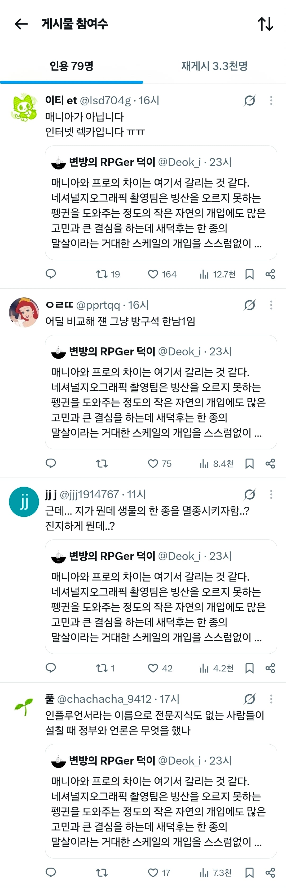
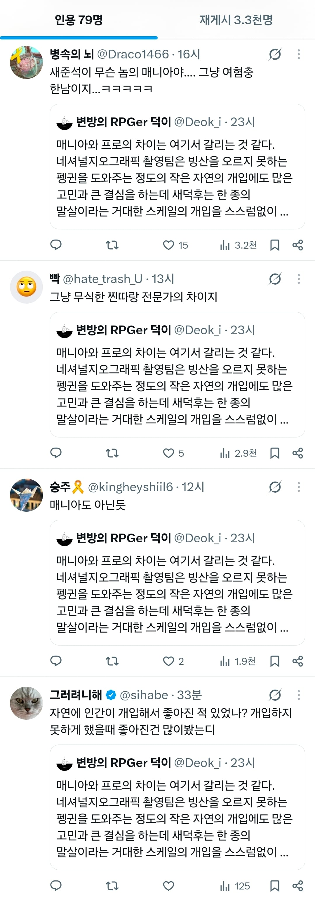
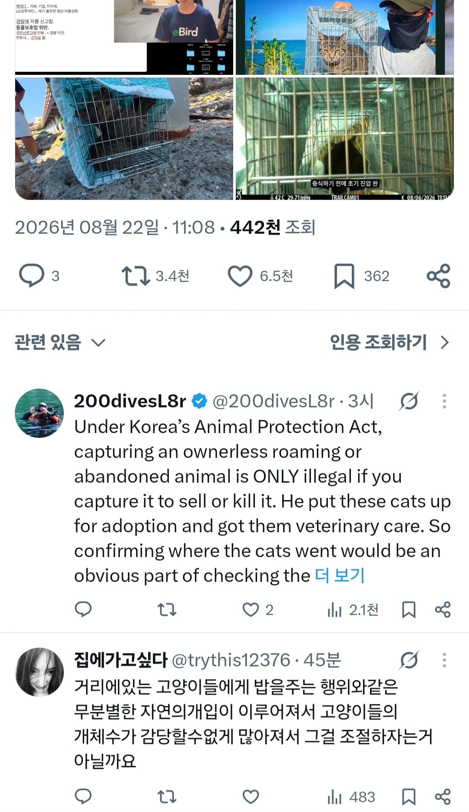
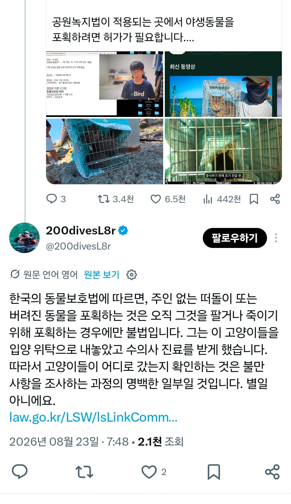

이 의견에 동조하는 사람들   반박하는 소수 의견들   길거리에 떠돌아다니는 길냥이들은 멸종위기종도 아닌데
댓글
수집 당시 댓글 35개
년째존버중임 · 7 시간 전
캣맘도 있으니 버드파파도 있어야지...!
자하 · 7 시간 전
또 구라 선동하네 참 시간 많아서 좋아 예전에 페미들 한국이 인도보다 성평등 지수 낮다느니 한국이 제일 성차별적인 나라라고 해외에 알리던게 생각나네
마리괭이 · 6 시간 전
구라건 뭐건 일단 떼쓰면 통함
앰플리파이드 · 6 시간 전
개체수 조절! 개체수 조절! 뭔 한 종의 말살이야
오르다말아 · 6 시간 전
자아 ㅈㄴ 비대한게 어디쪽인지는 알겠네ㅋㅋ
하늘을뚫을그것 · 6 시간 전
길거리 민폐충 새끼들 ㅋㅋㅋㅋ
클린로브링어 · 6 시간 전
아니 씨발 펭귄 도와주는 것도 고심해서 결정하는데 니는 뭔데 밥존나 무제한으로 줘서 새끼까지 까게 만드는건데 진짜
xsssx · 8 분 전
ㅋㅋㅋㅋㅋㅋ 능지박살임 ㄹㅇ
콩고기빌런 · 6 시간 전
팽귄도와주는것도 고민하는데 왜 길고양이한테 밥주고 잠자리만들어주는건 고민안하냐고
lIIllIIIl · 6 시간 전
멸종이란다 ㅋㅋㅋㅋㅋ 인간멸종이 더 빠를 듯? 정신병자들
피스타치오아몬드 · 6 시간 전
교묘하게 여혐으로 틀어서 페미코인까지 탄거 보면 진짜 토악질이 나옴
화면조정 · 6 시간 전
중간 애 존나 똑똑해. 인간이 자연에 개입해서 좋은 효과 본게 없다는 메타인지를 졸라 잘하네.
세류동히드라 · 6 시간 전
고양이 냅두고 저 여자들이 죽어야함
웨하스 · 5 시간 전
뭔 한종의 말살임 개체수 조절하자는데. 네셔널지오그래픽 촬영팀을 예로 들었는데 그럼 고양이 밥도 고양이 개체수가 자연 생태계에 얼마나 영향을 줄지 고심하고 준다는거지? ㅋㅋ
illiil · 5 시간 전
고양이 멸종보다 캣맘 멸종이 급한데 이건 대체 어떻게 해야 가능한거냐
뭘로할까고민이다 · 5 시간 전
네셔널지오그래픽 촬영팀도 펭귄을 도와줄 때 한참 고민한다. 근데 씨발년들아 니넨 고양이 밥 줄 때는 고민 안하잖아.
ParkTeria · 5 시간 전
애초에 대화가 성립되지 않아 쟤네들은 토론이 안됨 답은 정해져있고 거기에 짜맞추는 년들인데 우리도 굳이 상대할 필요없이 고양이가 생태계에 저지르는 악행과 해외 사례를 통해 통제해야한다는 담론을 밀어붙이면 됨
파이어족은불타오르는발 · 5 시간 전
한 종의 멸종과 개체수 조절도 구분 못 하는 빡대가리들
Jules · 5 시간 전
캣맘들이 원래 페미들이랑 연합인 거임? 한남 어쩌고 하는 거며 말투가 똑같은데 걍 교집합인건가 왜그러는 거냐 대체 나라에 도움이 1도 안된다
존나잘쉬는청년 · 4 시간 전
밥을 과다하게 주면서 대놓고 생태계 교란을 하고 있는 병신들이 할 말은 아닌데
자몽에이드 · 4 시간 전
에휴.. 새덕후가 진짜 어려운 싸움을 하고 있구나....
오늘도야근이다 · 4 시간 전
다 떠나서 고양이 혐오라고 비난하는건 지들 입장이 있으니 이해하는데 ... 왜 저기서 여혐, 한남이 튀어 나오는거지?
곰이구르면곰문곰문곰문 · 3 시간 전
병신호소인들인가
적당히대충 · 3 시간 전
생태계 파괴하는 도둑고양이를 단속 하자는 거지, 새덕후가 집안에 키우는 고양이까지 때려잡자고 했냐
조리개 · 3 시간 전
솔직히 뉴트리아 사냥 러브버그방제활동에도 똑같은 잣대로 종보호 외치던 조직있으면 난 이사람들 까진 인정한다 ㅋㅋㅋㅋㅋㅋㅋㅋㅋㅋㅋ
끼룩끼룩이 · 3 시간 전
자기들이 여러종의 멸종을 주도하고 있는건 생각도 안함 ㅋㅋㅋㅋ 진짜 살처분 마려운새끼들이다
패기보소 · 3 시간 전
그래 개입하지 말자면서 가끔 간식주는것도 아니고 매일같이 사료 쳐뿌리는게 자연에 개입하는거야 더군다나 공원녹지법 적용 안받으려고 공원 밖에서 포획했고 썸네일은 AI이미지임
그런데이것은틀렸습니다 · 3 시간 전
한놈이 악의 품고 쥐새끼 먹이 각잡고 주면 도시 쥐새끼로 덮는거 몇개월이면 충분할텐데 유해조수 개체수 조절 안하고 공존인지 뭔지 헛소리하면서 보호소 만들고 캣맘들 냅두는 지자체가 문제지
아이언호크 · 3 시간 전
저것에 개입하지 말라고 하면, 여성 우대정책 또한 하지 말아야 하는 것 아닌가?
초코다이제 · 3 시간 전
자연 개입하지 말라면서 왜 캣맘 아줌마들은 밥줘요? 이건 개입 아님? 개입이 뭔지 모름?
박제 · 3 시간 전
와... 사람 한명이 한 종을 멸종을 목표로 움직인다고 하면 과연 그 한사람이 멸종시키는게 빠를까 아님 그 종이 번식을 해서 개체수를 늘리는게 빠를까 ㅋㅋㅋ
뉴비곰 · 3 시간 전
병신들 다큐이야기하는데 다큐에서는 죽을 위기가 있어도 구해주지 않음 그런데 캣맘들은 왜 그냥 냅둬야지 밥을 주고 지랄임 ㅋㅋㅋ
BlairAthol · 3 시간 전
병신 캣맘들은 지들이 사료 뿌리면서 개입한건 절대 모르나봐 ㅋㅋㅋㅋ
asita · 2 시간 전
지들이 어떻게 행동했고 지금 어떤걸 비난하고 있는건지 정확히 이해하지도 못하나보네...
토마토별똥별인도인 · 1 시간 전
지능의 문제